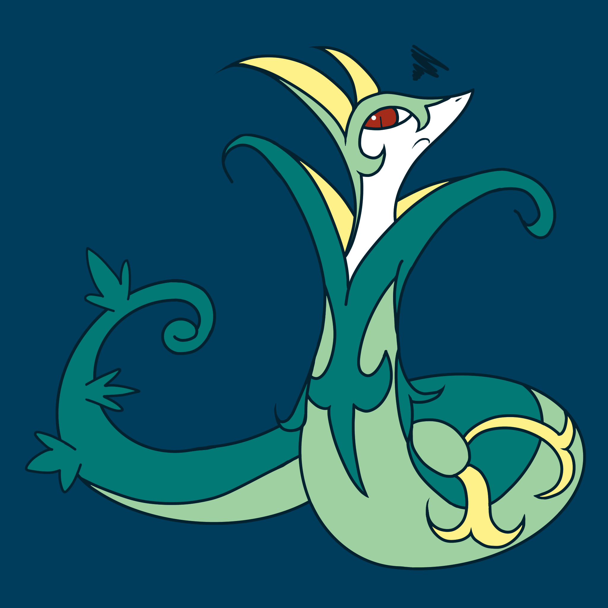

Pokemon was the first video game series I played on my DSi, and my first game was Pokemon White Two. Pokemon's main gameplay is catching Pokemon and leveling them up to defeat the gym leaders and, later on, the elite four and the champion. My first starter was Snivy. Its final evolution, Serperior, ended up being my favorite Pokemon overall. I've since played every Pokemon game since Generation 5, though I ended up skipping Generation 8.
